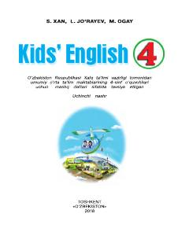

IT4-sinf o'quvchilari uchun ingliz tili fanidan amaliy mashq daftari.
Mazkur nashr umumiy o'rta ta'lim maktablarining 4-sinf o'quvchilari uchun mo'ljallangan ingliz tili mashq daftari hisoblanadi. Kitobda turli xil qiziqarli topshiriqlar, gaplarni to'ldirish mashqlari va o'quvchilarning til ko'nikmalarini oshirishga qaratilgan materiallar berilgan.